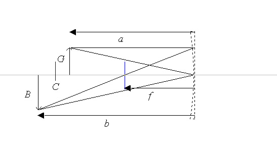
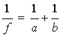
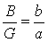

Billedet i et hulspejl kan ligesom billedet i en tynd linse konstrueres vha. nogle »linseregler«. På billedet herover er C centrum for det tynde spejl. At spejlet er tyndt, betyder at radius er stor og krumningen derfor lille.
Spejlet er tegnet stiplet, fordi reglerne kun gælder ideelt i et uendeligt tyndt spejl. Bemærk, at strålerne ikke er tegnet til spejlets overflade, men til en lodret linie gennem spejlets centrum.
Reglerne er følgende:
På figuren er kun vist to stråler - det er tilstrækkeligt til at fastlægge billedets position.
Der dannes ikke altid et fysik billede af genstanden, men det kan du selv undersøge i programmet.
Billedets position kan beregnes vha. linseformlen:

Bemærk, at pilene peger til venstre på figuren. Det markerer, at både a, b og f er negativ.
Forstørrelsen er givet ved:

Det ses ved at betragte ensvinklede trekanter på ovenstående figur.
Et barberspejl holdes 15 cm fra ansigtet og forstørringen er 2. Bestem spejlets brændvidde.
Mt. Palomar teleskopets spejl har en brændvidde på 18 meter. Solens diameter er 1,4·109 meter og afstanden til solen er 1,5·1011 meter.
Hvad er diameteren af billedet af solen dannet i spejlet alene?